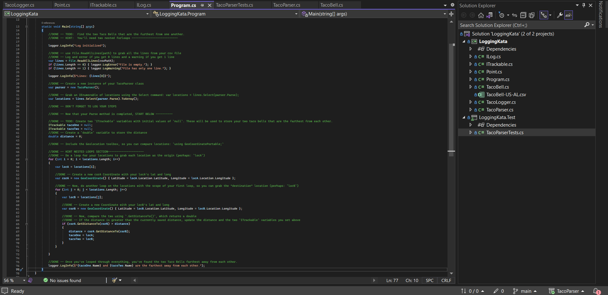
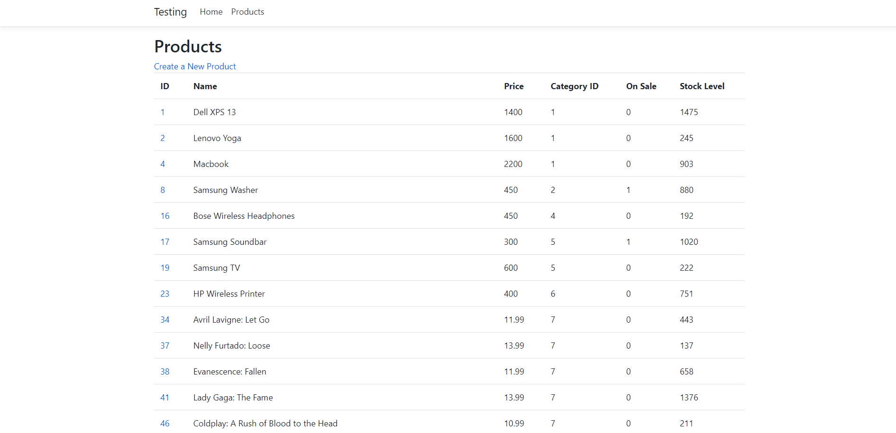

Brett Lazarine
Full Stack Developer
About Me
Full Stack Developer with certifications in numerous programming languages. Seeking to become an ever developing asset that exceeds all expectations. Developed a keen sense of data analysis and proactive interpretation skills while working in environments dense in live, volatile data streams. I am a Texas A&M graduate, of the Fightin' Texas Aggie Class of 2014, and developed my technical proficiencies with TrueCoders.
So far, these are all the different languages and skills that I have learned:
 C#
C# Python
Python SQL
SQL JavaScript
JavaScript .NET
.NET HTML
HTML CSS
CSS Java
Java Git
Git Bash
Bash
Projects and Experience
My GitHub houses all of the projects I have completed, and Codewars is a great place to see the work I've put in learning how to solve coding problems creatively!
Below are the projects I have built and continue to work on:
Horror Movie of the Day
- Utilized The Movie Database (TMDb) API, iterating through the returned pages to select the single, highest rated horror movie that was released on “today’s date”
- Project created in an ASP.NET MVC framework utilizing Visual Studio with the Newtonsoft.JSON NuGet package
- The program is written in C#, utilizing separate methods to pull the initial API call to select the movie, and a subsequent call to select the appropriate trailer for the movie
- HTML and CSS were added to the Index file in order to provide a visual representation of the program’s success
Taco Parser
- C# .NET application that iterates through an Excel CSV, containing geo-locations of Taco Bells, to determine which two Taco Bells are the furthest away from one another
- Utilizes xUnit to test the accuracy of the program
- Implements the xUnit and GeoCordinate.NetCore NuGet packages
Best Buy MVC
- C# ASP.NET MVC framework that uses both Dapper and MySQL NuGet packages
- Connects to a local MySQL Best Buy database, interacted with utilizing both MySQL Workbench and Linq
- Created MVC’s to view, update, create, and delete products from the Best Buy database
- Razor allowed for the implementation of C# in the Views